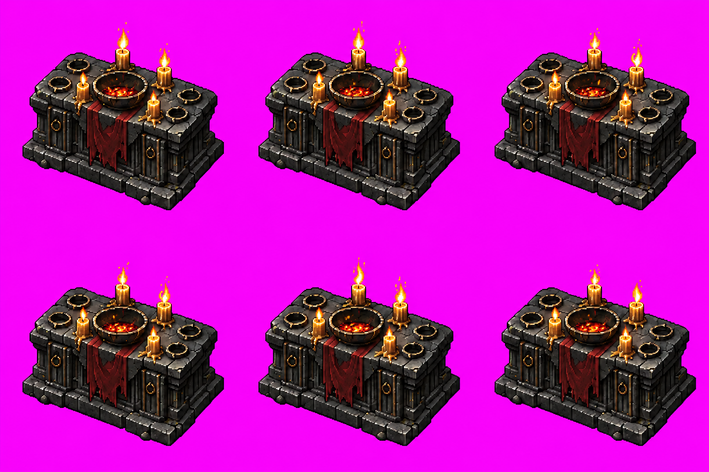
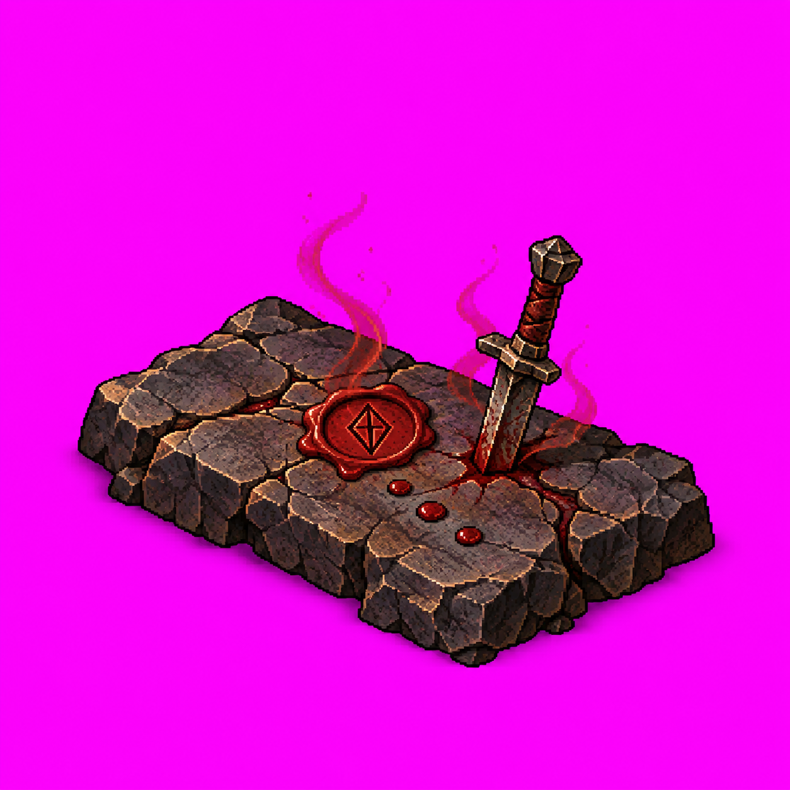
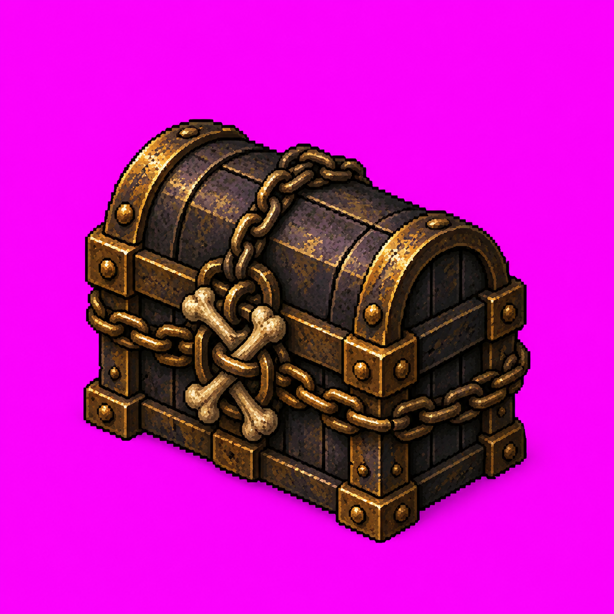
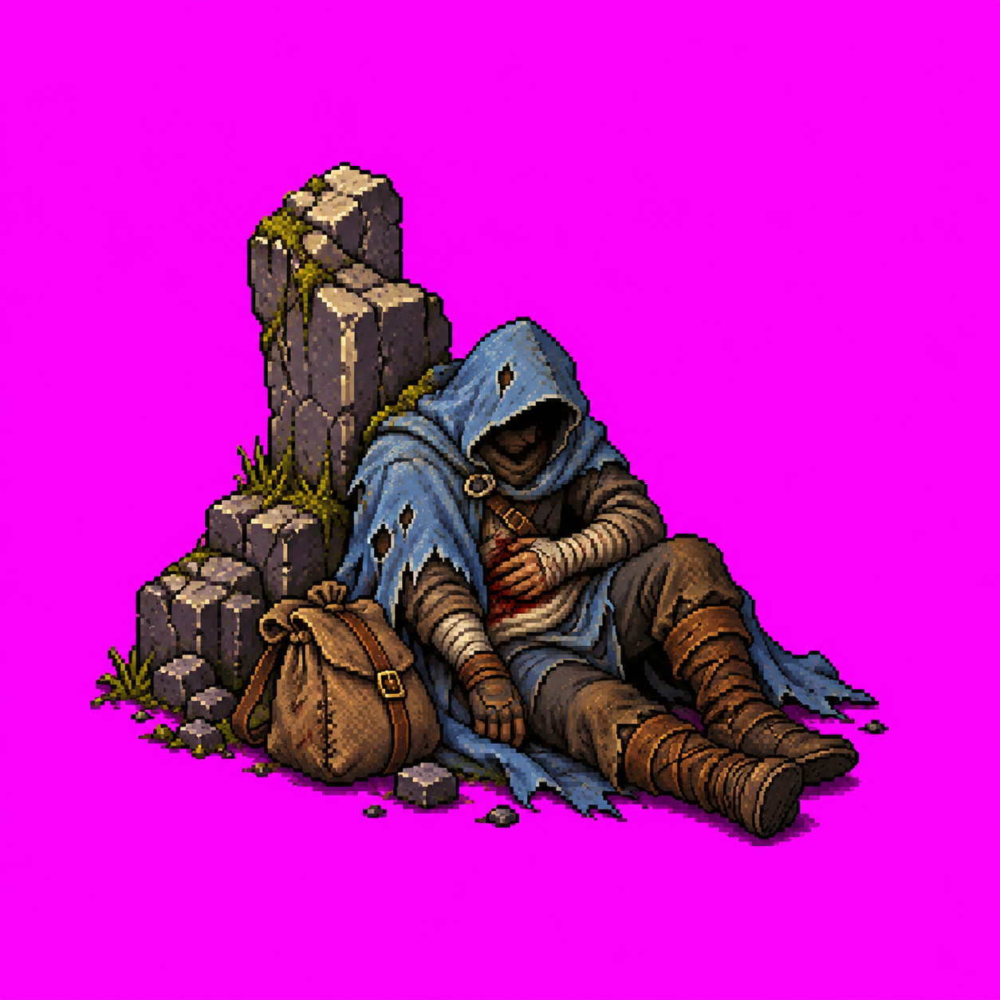
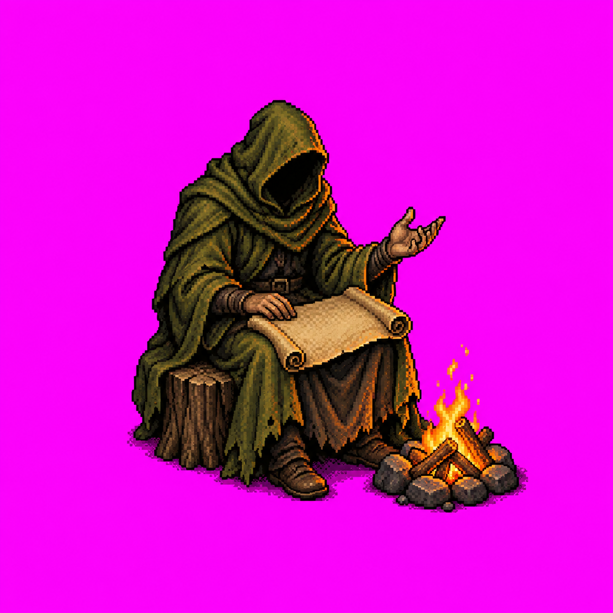
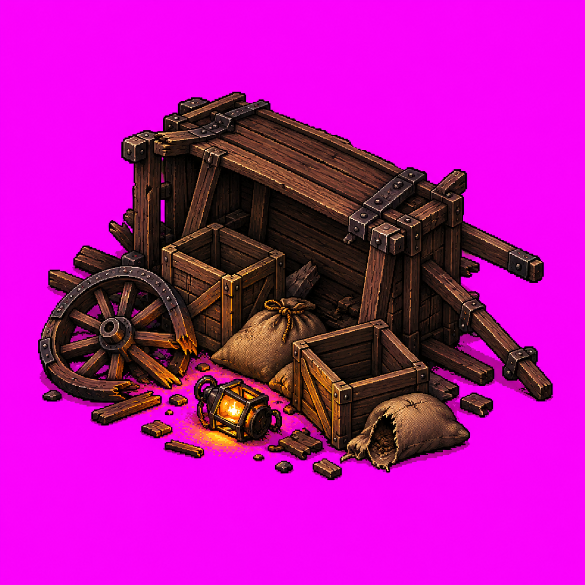
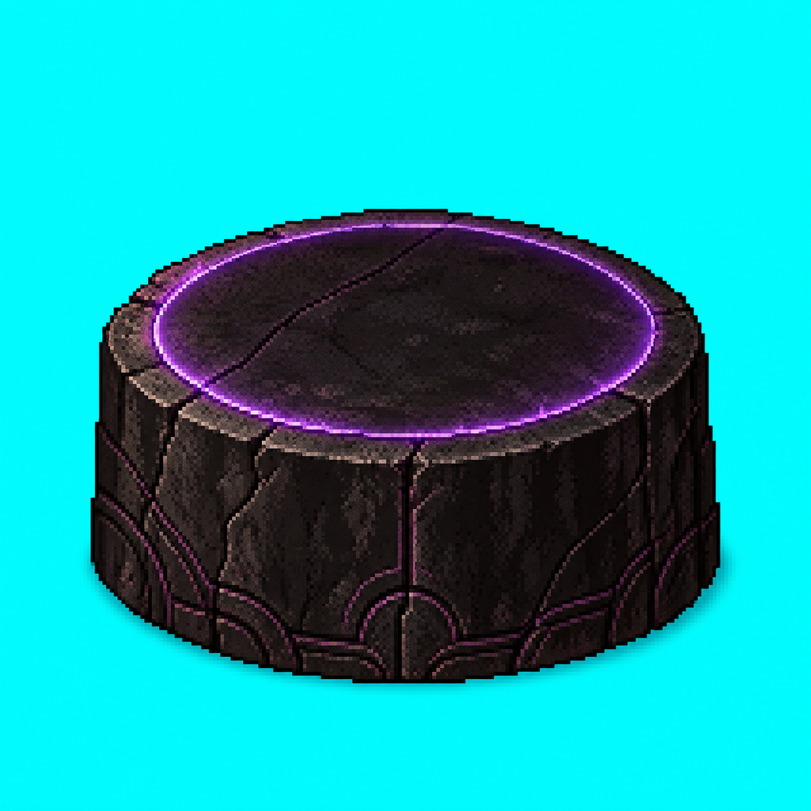

Geração nativa com imagegen. Fontes e versões anteriores preservadas. Versões selecionadas aceitas pelo dono em 2026-10-10. Montagem e recorte ainda pendentes. Imagens com fundo de recorte: nenhuma integrada ao jogo. Confira silhueta, cor, identidade do altar e distinção dos eventos.
AL01 — Altar animado v02
Quatro velas na v02; a referência estática mostra três chamas visíveis. A contagem textual de quatro foi usada nesta candidata: aceite de identidade registrado. Grade 3×2 nativa; posição/escala e invariância exata do corpo, montagem, recorte e alfa do corpo ainda precisam verificação.

Prévia em escala reduzida (fonte com fundo, não runtime):
1536×1024, RGB. Abrir fonte nativa
EV01 — Pacto de Sangue v02
v02 removeu tecido, correntes e adornos; três gotas visíveis e selo angular. Aceite visual registrado.

Prévia em escala reduzida (fonte com fundo, não runtime):
1254×1254, RGB. Abrir fonte nativa
EV02 — Relicário Lacrado v01
Cofre lacrado com correntes e ossos, sem luz saindo. Aceite visual registrado.

Prévia em escala reduzida (fonte com fundo, não runtime):
1254×1254, RGB. Abrir fonte nativa
EV03 — Peregrino Ferido v01
Um viajante genérico, capa azul-clara, bolsa e marco. Aceite visual registrado.

Prévia em escala reduzida (fonte com fundo, não runtime):
1254×1254, RGB. Abrir fonte nativa
EV04 — Contador de Histórias v02
v02 removeu bolsa e marcas do pergaminho; rosto na sombra e fogueira menor. Aceite visual registrado.

Prévia em escala reduzida (fonte com fundo, não runtime):
1254×1254, RGB. Abrir fonte nativa
EV05 — Carroça Abandonada v02
v02 removeu tecido, moedas e garrafa; carroça tombada, caixotes, sacos e lanterna. Aceite visual registrado.

Prévia em escala reduzida (fonte com fundo, não runtime):
1254×1254, RGB. Abrir fonte nativa
EV06 — Pedra do Eclipse v02
v02 reduziu altura e fragmentação; pedra baixa com aro roxo, ciano ao fundo. Acabamento e proporção aceitos visualmente.

Prévia em escala reduzida (fonte com fundo, não runtime):
1254×1254, RGB. Abrir fonte nativa